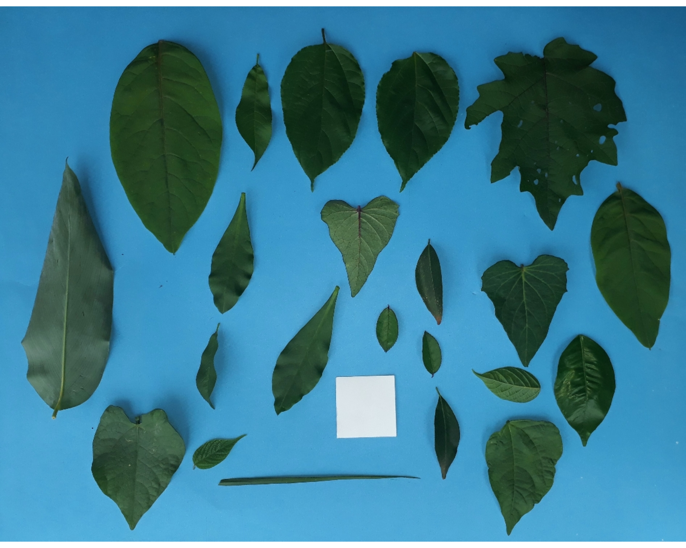
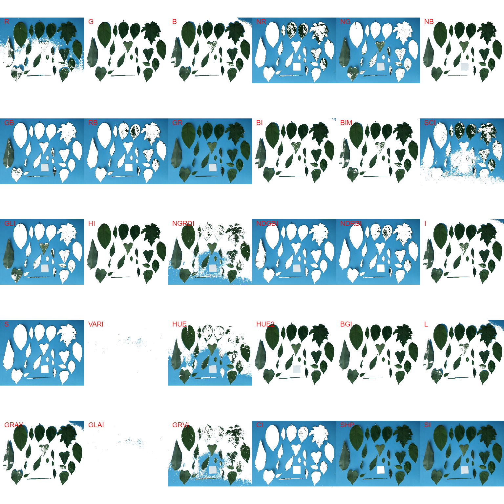
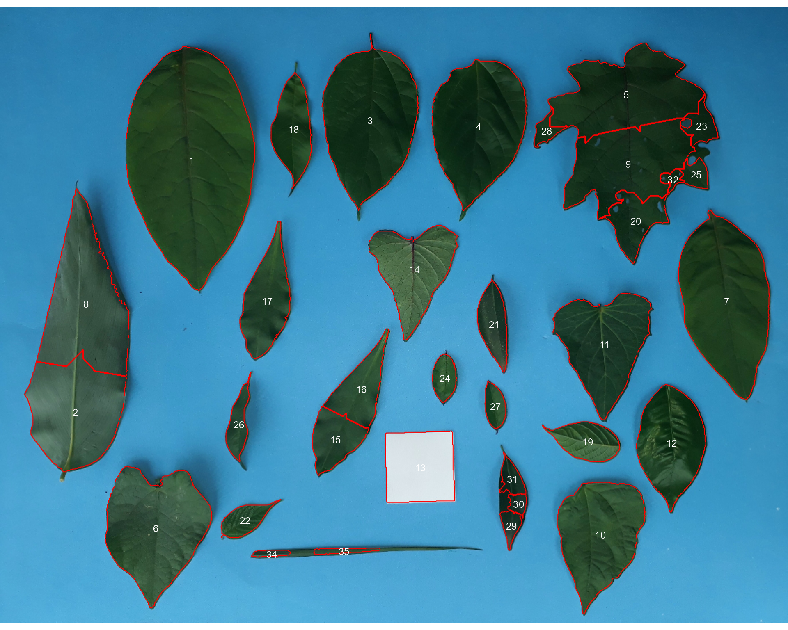
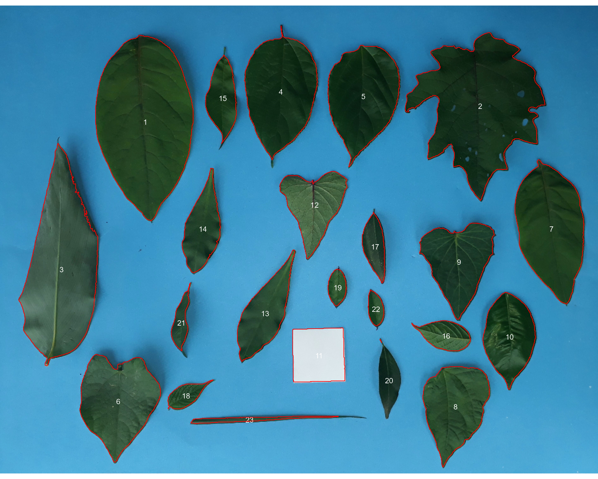
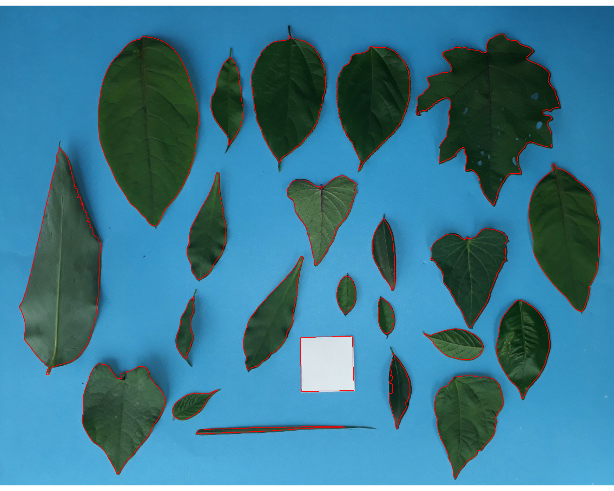
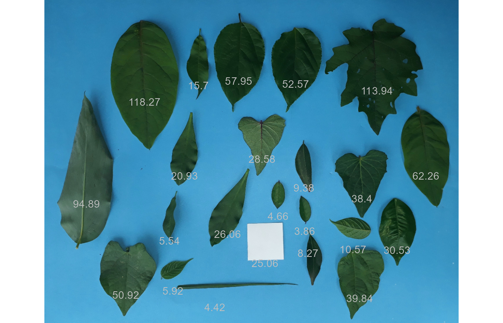

Measure leaf area using leaf images
Tiago Olivoto
2023-10-22
Source:vignettes/leaf_area.Rmd
leaf_area.RmdGetting started
We can use analyze_objects() to compute object features
such as area, perimeter, radius, etc. This can be used, for example, to
compute leaf area. Let’s compute the leaf area of leaves
with analyze_objects(). First, we use
image_segmentation() to identify candidate indexes to
segment foreground (leaves) from background.
library(pliman)
#> |==========================================================|
#> | Tools for Plant Image Analysis (pliman 2.1.0) |
#> | Author: Tiago Olivoto |
#> | Type `citation('pliman')` to know how to cite pliman |
#> | Visit 'http://bit.ly/pkg_pliman' for a complete tutorial |
#> |==========================================================|
path <- "https://raw.githubusercontent.com/TiagoOlivoto/images/master/pliman"
leaves <-
image_import("leaves2.jpg",
path = path,
plot = TRUE)
image_index(leaves)
#> Using downsample = 2 so that the number of rendered pixels approximates the `max_pixels`
B (Blue) and NB (Normalized Blue) are two
possible candidates to segment the leaves from the background. We will
use the NB index here (default option in
analyze_objects()). The measurement of the leaf area in
this approach can be done in two main ways: 1) using an object of known
area, and 2) knowing the image resolution in dpi (dots per inch).
Using an object of known area
- Count the number of objects (leaves in this case)
Here, we use the argument marker = "id" of the function
analyze_objects() to obtain the identification of each
object (leaf), allowing for further adjustment of the leaf area.
count <- analyze_objects(leaves, marker = "id")
Note that “holes” in some leaves resulted in the segmentation of one
leaf in more than one object (e.g., 5, 8, 22, 25, 18, 28). This will not
affect the total leaf area, but the area of individual leaves and the
average leaf area. This can be solved by either setting the argument
fill_hull = TRUE or watershed = FALSE (To
don’t implement the watershed-based object segmentation). Let’s see how
much better we can go.
count <-
analyze_objects(leaves,
marker = "id",
fill_hull = TRUE)
Almost there! Due to the morphology of the leaf composed by objects 2
and 23, it was segmented into two objects. This can be solved by setting
the argument object_size = "large" that will change the
default (medium) values for tolerance and
extension arguments.
count <-
analyze_objects(leaves,
marker = "id",
fill_hull = TRUE,
object_size = "large")
When the objects are not touching each other, the argument
watershed = FALSE would be a better option.
analyze_objects(leaves,
watershed = FALSE)
And here we are! Now, all leaves were identified correctly, but all measures were given in pixel units. The next step is to convert these measures to metric units.
- Convert the leaf area by the area of the known object
The function get_measures() is used to adjust the leaf
area using object 10, a square with a side of 5 cm (25 cm\(^2\)).
area <-
get_measures(count,
id = 11,
area ~ 25)
#> -----------------------------------------
#> measures corrected with:
#> object id: 11
#> area : 25
#> -----------------------------------------
#> Total : 801.522
#> Average : 36.433
#> -----------------------------------------
# plot the area to the segmented image
image_segment(leaves, index = "NB", verbose = FALSE)
plot_measures(area,
measure = "area",
col = "red") # default is "white"
knowing the image resolution in dpi (dots per inch)
When the image resolution is known, the measures in pixels obtained
with analyze_objects() are corrected by the image
resolution. The function dpi() can be used to compute the
dpi of an image, provided that the size of any object is known. See the
dpi section for more details. In this case, the
estimated resolution considering the calibration of object 10 was ~50.5
DPIs. We inform this value in the dpi argument of
get_measures().
area2 <- get_measures(count, dpi = 50.5)
plot(leaves)
plot_measures(area2,
measure = "area",
vjust = -60,
col = "gray") # default is "white"